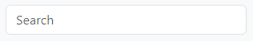
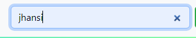

Welcome to our website! We understand that finding information quickly and efficiently is crucial...
The search bar is conveniently located in the top-right corner of our website...
Once you've clicked on the search icon, a text box will appear...
After entering your search query, simply press the "Enter" key on your keyboard or click on the "Search" button...
Once the search results appear, you can scroll through the list to find the most relevant information...
Our search feature is designed to make your browsing experience efficient and tailored to your needs...
hellojibolta@gmail.com
If you ever need further assistance or have feedback, feel free to reach out to our support team.